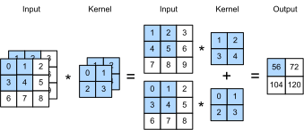
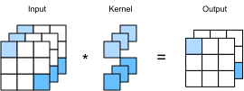

%load_ext d2lbook.tab
tab.interact_select(['mxnet', 'pytorch', 'tensorflow', 'jax'])Canaux d’entrée et de sortie multiples
Bien que nous ayons décrit les multiples canaux qui composent chaque image (par exemple, les images couleur possèdent les canaux standard RVB pour indiquer la quantité de rouge, de vert et de bleu) et les couches convolutives pour plusieurs canaux dans subsec_why-conv-channels, jusqu’à présent, nous avons simplifié tous nos exemples numériques en travaillant avec un seul canal d’entrée et un seul canal de sortie. Cela nous a permis de considérer nos entrées, nos noyaux de convolution et nos sorties comme des tenseurs bidimensionnels.
Lorsque nous ajoutons des canaux, nos entrées et nos représentations cachées deviennent toutes deux des tenseurs tridimensionnels. Par exemple, chaque image d’entrée RVB a une forme de \(3\times h\times w\). Nous appelons cet axe, d’une taille de 3, la dimension des canaux. La notion de canaux est aussi ancienne que les CNN eux-mêmes : par exemple LeNet-5 [LeCun.Jackel.Bottou.ea.1995] les utilise. Dans cette section, nous examinerons de plus près les noyaux de convolution avec plusieurs canaux d’entrée et plusieurs canaux de sortie.
%%tab mxnet
from d2l import mxnet as d2l
from mxnet import np, npx
npx.set_np()%%tab pytorch
from d2l import torch as d2l
import torch%%tab jax
from d2l import jax as d2l
import jax
from jax import numpy as jnp%%tab tensorflow
from d2l import tensorflow as d2l
import tensorflow as tfCanaux d’entrée multiples
Lorsque les données d’entrée contiennent plusieurs canaux, nous devons construire un noyau de convolution avec le même nombre de canaux d’entrée que les données d’entrée, afin qu’il puisse effectuer une corrélation croisée avec les données d’entrée. En supposant que le nombre de canaux pour les données d’entrée est \(c_\textrm{i}\), le nombre de canaux d’entrée du noyau de convolution doit également être \(c_\textrm{i}\). Si la forme de la fenêtre de notre noyau de convolution est \(k_\textrm{h}\times k_\textrm{w}\), alors, quand \(c_\textrm{i}=1\), nous pouvons considérer notre noyau de convolution comme un simple tenseur bidimensionnel de forme \(k_\textrm{h}\times k_\textrm{w}\).
Cependant, quand \(c_\textrm{i}>1\), nous avons besoin d’un noyau qui contient un tenseur de forme \(k_\textrm{h}\times k_\textrm{w}\) pour chaque canal d’entrée. La concaténation de ces tenseurs \(c_\textrm{i}\) donne un noyau de convolution de forme \(c_\textrm{i}\times k_\textrm{h}\times k_\textrm{w}\). Puisque l’entrée et le noyau de convolution ont chacun \(c_\textrm{i}\) canaux, nous pouvons effectuer une opération de corrélation croisée sur le tenseur bidimensionnel de l’entrée et le tenseur bidimensionnel du noyau de convolution pour chaque canal, en additionnant les \(c_\textrm{i}\) résultats (sommation sur les canaux) pour obtenir un tenseur bidimensionnel. C’est le résultat d’une corrélation croisée bidimensionnelle entre une entrée multicanal et un noyau de convolution à plusieurs canaux d’entrée.
fig_conv_multi_in fournit un exemple de corrélation croisée bidimensionnelle avec deux canaux d’entrée. Les parties ombrées représentent le premier élément de sortie ainsi que les éléments des tenseurs d’entrée et de noyau utilisés pour le calcul de la sortie : \((1\times1+2\times2+4\times3+5\times4)+(0\times0+1\times1+3\times2+4\times3)=56\).

Pour nous assurer de bien comprendre ce qui se passe ici, nous pouvons (implémenter nous-mêmes des opérations de corrélation croisée avec plusieurs canaux d’entrée). Notez que tout ce que nous faisons est d’effectuer une opération de corrélation croisée par canal, puis d’additionner les résultats.%%tab mxnet, pytorch, jax
def corr2d_multi_in(X, K):
# Iterate through the 0th dimension (channel) of K first, then add them up
return sum(d2l.corr2d(x, k) for x, k in zip(X, K))%%tab tensorflow
def corr2d_multi_in(X, K):
# Iterate through the 0th dimension (channel) of K first, then add them up
return tf.reduce_sum([d2l.corr2d(x, k) for x, k in zip(X, K)], axis=0)Nous pouvons construire le tenseur d’entrée X et le
tenseur de noyau K correspondant aux valeurs de la
fig_conv_multi_in pour (valider la sortie) de
l’opération de corrélation croisée.
%%tab all
X = d2l.tensor([[[0.0, 1.0, 2.0], [3.0, 4.0, 5.0], [6.0, 7.0, 8.0]],
[[1.0, 2.0, 3.0], [4.0, 5.0, 6.0], [7.0, 8.0, 9.0]]])
K = d2l.tensor([[[0.0, 1.0], [2.0, 3.0]], [[1.0, 2.0], [3.0, 4.0]]])
corr2d_multi_in(X, K)Canaux de sortie multiples
Quel que soit le nombre de canaux d’entrée, nous avons jusqu’à présent toujours obtenu un seul canal de sortie. Cependant, comme nous l’avons vu dans la subsec_why-conv-channels, il s’avère essentiel d’avoir plusieurs canaux à chaque couche. Dans les architectures de réseaux de neurones les plus populaires, nous augmentons en fait la dimension des canaux à mesure que nous nous enfonçons dans le réseau de neurones, en effectuant généralement un sous-échantillonnage pour échanger la résolution spatiale contre une plus grande profondeur de canaux. Intuitivement, on pourrait penser que chaque canal répond à un ensemble différent de caractéristiques. La réalité est un peu plus complexe que cela. Une interprétation naïve suggérerait que les représentations sont apprises indépendamment par pixel ou par canal. Au lieu de cela, les canaux sont optimisés pour être conjointement utiles. Cela signifie que plutôt que de faire correspondre un seul canal à un détecteur de bord, cela peut simplement signifier qu’une certaine direction dans l’espace des canaux correspond à la détection de bords.
Désignons par \(c_\textrm{i}\) et \(c_\textrm{o}\) le nombre de canaux d’entrée et de sortie, respectivement, et par \(k_\textrm{h}\) et \(k_\textrm{w}\) la hauteur et la largeur du noyau. Pour obtenir une sortie avec plusieurs canaux, nous pouvons créer un tenseur de noyau de forme \(c_\textrm{i}\times k_\textrm{h}\times k_\textrm{w}\) pour chaque canal de sortie. Nous les concaténons sur la dimension des canaux de sortie, de sorte que la forme du noyau de convolution soit \(c_\textrm{o}\times c_\textrm{i}\times k_\textrm{h}\times k_\textrm{w}\). Dans les opérations de corrélation croisée, le résultat sur chaque canal de sortie est calculé à partir du noyau de convolution correspondant à ce canal de sortie et utilise les entrées de tous les canaux du tenseur d’entrée.
Nous implémentons une fonction de corrélation croisée pour calculer la sortie de plusieurs canaux comme indiqué ci-dessous.
%%tab all
def corr2d_multi_in_out(X, K):
# Iterate through the 0th dimension of K, and each time, perform
# cross-correlation operations with input X. All of the results are
# stacked together
return d2l.stack([corr2d_multi_in(X, k) for k in K], 0)Nous construisons un noyau de convolution trivial avec trois canaux
de sortie en concaténant le tenseur de noyau K avec
K+1 et K+2.
%%tab all
K = d2l.stack((K, K + 1, K + 2), 0)
K.shapeCi-dessous, nous effectuons des opérations de corrélation croisée sur
le tenseur d’entrée X avec le tenseur de noyau
K. Maintenant, la sortie contient trois canaux. Le résultat
du premier canal est cohérent avec le résultat du tenseur d’entrée
X précédent et du noyau à plusieurs canaux d’entrée et un
seul canal de sortie.
%%tab all
corr2d_multi_in_out(X, K)Couche convolutive \(1\times 1\)
À première vue, une convolution \(1 \times 1\), c’est-à-dire \(k_\textrm{h} = k_\textrm{w} = 1\), ne semble pas avoir beaucoup de sens. Après tout, une convolution corrèle les pixels adjacents. Une convolution \(1 \times 1\) ne le fait évidemment pas. Néanmoins, ce sont des opérations populaires qui sont parfois incluses dans la conception de réseaux profonds complexes [Lin.Chen.Yan.2013,Szegedy.Ioffe.Vanhoucke.ea.2017]. Voyons plus en détail ce qu’elle fait réellement.
Comme la fenêtre minimale est utilisée, la convolution \(1\times 1\) perd la capacité des couches convolutives plus larges à reconnaître des motifs constitués d’interactions entre des éléments adjacents dans les dimensions de hauteur et de largeur. Le seul calcul de la convolution \(1\times 1\) se produit sur la dimension des canaux.
La fig_conv_1x1 montre le calcul de corrélation croisée utilisant le noyau de convolution \(1\times 1\) avec 3 canaux d’entrée et 2 canaux de sortie. Notez que les entrées et les sorties ont les mêmes hauteur et largeur. Chaque élément de la sortie est dérivé d’une combinaison linéaire d’éléments à la même position dans l’image d’entrée. Vous pourriez considérer la couche convolutive \(1\times 1\) comme constituant une couche entièrement connectée appliquée à chaque emplacement de pixel pour transformer les \(c_\textrm{i}\) valeurs d’entrée correspondantes en \(c_\textrm{o}\) valeurs de sortie. Comme il s’agit toujours d’une couche convolutive, les poids sont partagés entre les emplacements de pixels. Ainsi, la couche convolutive \(1\times 1\) nécessite \(c_\textrm{o}\times c_\textrm{i}\) poids (plus le biais). Notez également que les couches convolutives sont généralement suivies par des non-linéarités. Cela garantit que les convolutions \(1 \times 1\) ne peuvent pas simplement être fusionnées dans d’autres convolutions.

Vérifions si cela fonctionne en pratique : nous implémentons une convolution \(1 \times 1\) en utilisant une couche entièrement connectée. La seule chose est que nous devons faire quelques ajustements à la forme des données avant et après la multiplication matricielle.%%tab all
def corr2d_multi_in_out_1x1(X, K):
c_i, h, w = X.shape
c_o = K.shape[0]
X = d2l.reshape(X, (c_i, h * w))
K = d2l.reshape(K, (c_o, c_i))
# Matrix multiplication in the fully connected layer
Y = d2l.matmul(K, X)
return d2l.reshape(Y, (c_o, h, w))Lors de l’exécution de convolutions \(1\times 1\), la fonction ci-dessus est
équivalente à la fonction de corrélation croisée
corr2d_multi_in_out précédemment implémentée. Vérifions
cela avec quelques données d’exemple.
%%tab mxnet, pytorch
X = d2l.normal(0, 1, (3, 3, 3))
K = d2l.normal(0, 1, (2, 3, 1, 1))
Y1 = corr2d_multi_in_out_1x1(X, K)
Y2 = corr2d_multi_in_out(X, K)
assert float(d2l.reduce_sum(d2l.abs(Y1 - Y2))) < 1e-6%%tab tensorflow
X = d2l.normal((3, 3, 3), 0, 1)
K = d2l.normal((2, 3, 1, 1), 0, 1)
Y1 = corr2d_multi_in_out_1x1(X, K)
Y2 = corr2d_multi_in_out(X, K)
assert float(d2l.reduce_sum(d2l.abs(Y1 - Y2))) < 1e-6%%tab jax
X = jax.random.normal(jax.random.PRNGKey(d2l.get_seed()), (3, 3, 3)) + 0 * 1
K = jax.random.normal(jax.random.PRNGKey(d2l.get_seed()), (2, 3, 1, 1)) + 0 * 1
Y1 = corr2d_multi_in_out_1x1(X, K)
Y2 = corr2d_multi_in_out(X, K)
assert float(d2l.reduce_sum(d2l.abs(Y1 - Y2))) < 1e-6Discussion
Les canaux nous permettent de combiner le meilleur des deux mondes : les MLP qui permettent des non-linéarités significatives et les convolutions qui permettent une analyse localisée des caractéristiques. En particulier, les canaux permettent au CNN de raisonner avec plusieurs caractéristiques, telles que des détecteurs de bords et de formes, en même temps. Ils offrent également un compromis pratique entre la réduction drastique des paramètres découlant de l’invariance par translation et de la localité, et le besoin de modèles expressifs et diversifiés en vision par ordinateur.
Notez cependant que cette flexibilité a un prix. Étant donné une image de taille \((h \times w)\), le coût du calcul d’une convolution \(k \times k\) est \(\mathcal{O}(h \cdot w \cdot k^2)\). Pour \(c_\textrm{i}\) et \(c_\textrm{o}\) canaux d’entrée et de sortie respectivement, cela passe à \(\mathcal{O}(h \cdot w \cdot k^2 \cdot c_\textrm{i} \cdot c_\textrm{o})\). Pour une image de \(256 \times 256\) pixels avec un noyau \(5 \times 5\) et 128 canaux d’entrée et de sortie respectivement, cela représente plus de 53 milliards d’opérations (nous comptons les multiplications et les additions séparément). Plus tard, nous rencontrerons des stratégies efficaces pour réduire ce coût, par exemple en exigeant que les opérations par canal soient blocs-diagonales, ce qui conduit à des architectures telles que ResNeXt [Xie.Girshick.Dollar.ea.2017].
Exercices
- Supposons que nous ayons deux noyaux de convolution de tailles \(k_1\) et \(k_2\), respectivement (sans non-linéarité
entre les deux).
- Prouvez que le résultat de l’opération peut être exprimé par une seule convolution.
- Quelle est la dimensionnalité de la convolution unique équivalente ?
- L’inverse est-il vrai, c’est-à-dire pouvez-vous toujours décomposer une convolution en deux plus petites ?
- Supposons une entrée de forme \(c_\textrm{i}\times h\times w\) et un noyau
de convolution de forme \(c_\textrm{o}\times
c_\textrm{i}\times k_\textrm{h}\times k_\textrm{w}\), un
remplissage (padding) de \((p_\textrm{h}, p_\textrm{w})\) et un pas
(stride) de \((s_\textrm{h},
s_\textrm{w})\).
- Quel est le coût de calcul (multiplications et additions) pour la propagation avant ?
- Quelle est l’empreinte mémoire ?
- Quelle est l’empreinte mémoire pour le calcul arrière ?
- Quel est le coût de calcul pour la rétropropagation ?
- Par quel facteur le nombre de calculs augmente-t-il si nous doublons à la fois le nombre de canaux d’entrée \(c_\textrm{i}\) et le nombre de canaux de sortie \(c_\textrm{o}\) ? Que se passe-t-il si nous doublons le remplissage ?
- Les variables
Y1etY2dans le dernier exemple de cette section sont-elles exactement les mêmes ? Pourquoi ? - Exprimez les convolutions sous forme de multiplication matricielle, même lorsque la fenêtre de convolution n’est pas \(1 \times 1\).
- Votre tâche consiste à implémenter des convolutions rapides avec un noyau \(k \times k\). L’un des algorithmes candidats consiste à balayer horizontalement la source, en lisant une bande de largeur \(k\) et en calculant la bande de sortie de largeur \(1\), une valeur à la fois. L’alternative consiste à lire une bande de largeur \(k + \Delta\) et à calculer une bande de sortie de largeur \(\Delta\). Pourquoi cette dernière solution est-elle préférable ? Y a-t-il une limite à la taille de \(\Delta\) que vous devriez choisir ?
- Supposons que nous ayons une matrice \(c
\times c\).
- À quel point est-il plus rapide de multiplier par une matrice blocs-diagonale si la matrice est divisée en \(b\) blocs ?
- Quel est l’inconvénient d’avoir \(b\) blocs ? Comment pourriez-vous y remédier, au moins partiellement ?
:begin_tab:mxnet Discussions :end_tab:
:begin_tab:pytorch Discussions :end_tab:
:begin_tab:tensorflow Discussions :end_tab:
:begin_tab:jax Discussions :end_tab: